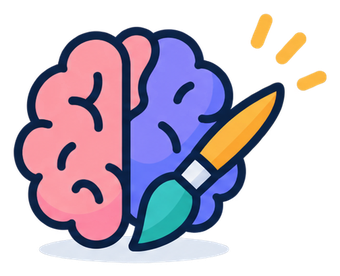
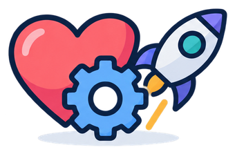
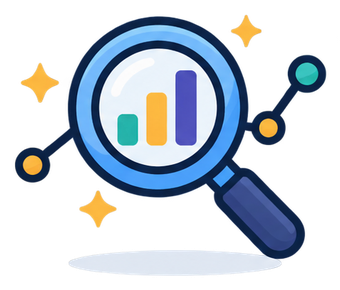
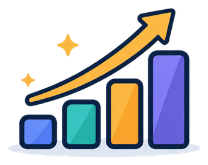

Ayudo a negocios y equipos a quitarse de encima el trabajo manual — con automatización, datos ordenados e IA aplicada a procesos reales.

Aplicada a tu forma de trabajar, no genérica.

Procesos que corren solos, de punta a punta.

Información ordenada, lista para decidir.

Menos horas perdidas, más control real.
Elige el nivel que le haga sentido — técnico o no — y comparte lo que encaje.
Dueños de negocio, emprendedores, equipos sin conocimiento técnico
Si conoces a alguien…
que no sabe qué está pasando en su negocio hasta que ya es tarde...
Ordeno su información (clientes, ventas, inventario) dispersa en Excels o sistemas sueltos, y le doy reportes simples y automáticos del estado real.
que pierde horas haciendo lo mismo todos los días (reportes, seguimiento, mensajes)...
Automatizo esas tareas y conecto las herramientas que ya usa (WhatsApp, Excel, CRM (sistema para gestionar clientes), correo) para que no tenga que copiar y pegar nada.
que quiere usar IA pero no sabe por dónde empezar...
Le enseño a usar ChatGPT o Claude en su día a día, y doy capacitaciones en vivo para que su equipo pierda el miedo y empiece a usarla ya.
que necesita una herramienta hecha a su medida (porque nada genérico le queda bien)...
Le ayudo a definirla y a construirla desde cero.
a quien se le pierden clientes potenciales porque no les da seguimiento...
Le configuro su CRM (sistema para gestionar clientes) (por ejemplo Kommo) para que sepa exactamente en qué etapa está cada cliente.
Gerentes de operaciones, líderes de proyecto, perfiles con nociones básicas de tecnología
Si conoces a alguien…
cuyos reportes o consultas tardan minutos en correr...
Optimizo bases de datos SQL Server (motor de bases de datos usado en muchas empresas) para que lo que tardaba minutos, tarde segundos.
que mueve datos entre sistemas a mano, todos los días...
Construyo pipelines de datos (ETL/SSIS (herramientas que mueven y transforman datos automáticamente entre sistemas)) que extraen, transforman y cargan información sin intervención manual.
que quiere automatizar un proceso completo, no solo un paso suelto...
Diseño flujos de punta a punta: desde que entra el dato hasta que se genera la acción o el reporte.
que quiere que la IA analice información, no solo responda preguntas sueltas...
Integro modelos de IA a procesos existentes para generar diagnósticos automáticos (ventas, desempeño, etc.).
que necesita capacitar a su equipo (por ejemplo abogados, vendedores) en IA aplicada a su trabajo real...
Diseño e imparto cursos en vivo con contenido adaptado a su lenguaje y sus casos.
que necesita un servicio o app conectado directamente a las APIs (conexiones que permiten que dos sistemas compartan información automáticamente) de las plataformas que usa (Amazon, etc.)...
Construyo esas herramientas personalizadas de principio a fin.
con un sistema viejo que sigue funcionando pero ya es un riesgo...
Lo modernizo sin detener la operación.
Perfiles técnicos, CTOs, líderes de desarrollo, equipos de datos
Si conoces a alguien…
con planes de ejecución lentos en un data warehouse (base de datos diseñada para analizar grandes volúmenes de información) de alto volumen...
Optimizo consultas SQL Server, incluyendo conversión de funciones multi-statement a inline table-valued functions para mejorar estadísticas y paralelismo.
con datos corruptos por charset (codificación de texto) en MySQL legacy...
Diagnostico y corrijo corrupción UTF-8/utf8mb4 a nivel de tabla y de datos ya corrompidos.
que quiere meter un LLM (modelo de lenguaje de IA, como el que usa ChatGPT) dentro de un flujo de negocio real, no solo un chatbot...
Integro APIs de modelos de lenguaje (Claude API) para automatizar análisis y generar insights dentro de procesos existentes.
armando un entorno de trabajo multi-cliente con IA...
Diseño esos entornos con Claude Cowork: estructura de carpetas, archivos de contexto (CLAUDE.md), indexación por manifiesto y reconocimiento automático de datos.
con un sistema PHP legacy que nadie quiere tocar...
Lo modernizo: migro funciones deprecated a PDO (forma segura de conectar PHP con bases de datos), centralizo conexiones, agrego logging con auto-rotación, todo de forma progresiva sin parar producción.
que necesita un backend dockerizado (empaquetado con Docker, para que el software funcione igual en cualquier servidor) con integraciones externas (APIs, OAuth (protocolo de autenticación segura entre sistemas) multi-cliente)...
Desarrollo esos servicios en Python con PostgreSQL (sistema de bases de datos), con conocimiento de arquitectura AWS (servicios de nube de Amazon).
que necesita a alguien que hable con desarrollo Y con negocio...
20+ años en ingeniería de datos y automatización (Telefónica Ecuador, Livingston International, Banco Azteca) — traduzco entre ambos mundos.
Que me escriba directo — le digo si puedo ayudarle.
Escribir por WhatsApp +52 33 4247 3145